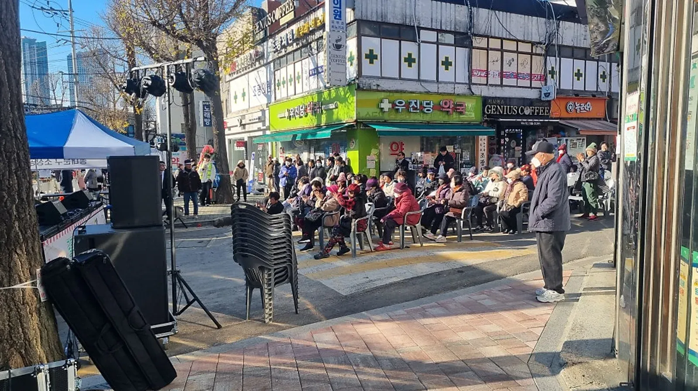

행사 준비 · 2026년 11월 19일
행사 참석 인원 집계: 입장·재입장·이탈 수 구분
행사 참석 인원 집계는 신청자 수, 한 번이라도 온 사람 수, 현재 머무는 사람 수를 구분하는 일입니다. 같은 숫자처럼 보여도 답하는 질문이 다르므로 무엇을 보고할지 정한 뒤 기록 방식을 선택합니다.

- 보고할 숫자가 누적 참석인지 현재 체류인지 먼저 적습니다.
- 복수 출입구의 기록은 같은 사람을 다시 세지 않도록 대조합니다.
- 재입장과 처음 입장을 나누고 확인되지 않은 차이는 남깁니다.
- 추정치와 확인 집계를 섞지 않고 기준 시점과 범위를 함께 전달합니다.

1. 행사 참석 인원 집계의 질문부터 고릅니다
행사 신청을 마친 사람도 현장에 오지 않을 수 있고, 현장 참가를 허용한 행사에서는 신청 기록 없이 온 사람도 있습니다. 신청 명단의 줄 수를 곧바로 실제 참석 수로 보고하지 않습니다.
주최 측이 알고 싶은 것이 지금 자리를 잡아야 할 사람인지, 전체 행사에 방문한 사람인지 확인하세요. 전자는 현재 체류 상황에 가깝고 후자는 중복을 뺀 누적 방문 기록이 필요하므로 같은 양식을 쓰기 어렵습니다.
진행자, 출연자, 운영 인력처럼 참가자와 역할이 다른 사람을 포함하는지도 정합니다. 한 보고에서는 포함하고 다른 보고에서는 빼면 사람이 늘지 않았는데도 숫자가 달라지는 것처럼 보입니다.
2. 숫자 옆에 범위와 확인 상태를 붙입니다
보고 양식은 숫자 칸만 크게 만들지 않습니다. 어떤 출입구를 집계했는지, 언제까지 반영했는지, 아직 대조하지 않은 기록이 있는지를 함께 적어야 받는 사람이 숫자를 해석할 수 있습니다.
| 보고 항목 | 뜻 | 혼동하기 쉬운 항목 |
|---|---|---|
| 신청 기록 | 신청 절차를 마친 기록 | 실제 현장 참석 |
| 누적 참석 | 중복을 대조한 방문 사람 수 | 입구 통과 횟수 |
| 현재 체류 | 입장과 이탈을 같은 기준으로 반영한 상황 | 누적 방문 합계 |
| 미확인 기록 | 대조가 끝나지 않은 항목 | 확정 참석에 포함한 수치 |
이 표는 집계 목적을 나누는 예시입니다. 출입을 계속 확인하기 어려운 공개 행사라면 정확한 현재 체류 수라고 단정하지 말고 관찰 범위와 추정 방식의 한계를 보고에 붙입니다.
3. 출입구가 여러 개면 원본 기록을 나눠 둡니다
각 입구에서 수를 적을 때는 어느 입구의 기록인지 남깁니다. 서로 다른 담당이 같은 참가자의 이동을 각각 처음 입장으로 세지 않도록 재입장 표시나 명단 확인 방식을 주최 측과 정하세요.
입구별 합계를 먼저 더하고 나중에 사람이 겹쳤는지 추측하는 방식은 피합니다. 명단형 행사라면 공통 식별 기준으로 대조하고, 기록이 없는 행사라면 통과 횟수와 사람 수를 같은 이름으로 부르지 않습니다.
교대할 때는 현재 숫자뿐 아니라 마지막으로 반영한 지점을 알려 줍니다. 종이의 어느 줄부터 새 담당이 이어 쓸지 정하지 않으면 앞 담당이 센 부분을 다시 세거나 중간 구간을 놓칠 수 있습니다.
4. 재입장과 이탈은 목적에 맞게 반영합니다
밖에 잠시 나갔다 돌아온 사람은 누적 참석에 새로운 사람으로 더하지 않습니다. 현재 체류를 기록하는 행사라면 나갈 때와 돌아올 때 같은 기준으로 반영할 수 있는지 확인해야 합니다.
참가자가 여러 공간을 옮겨 다니는 경우 한 구역을 나간 것이 행사 전체를 떠난 것은 아닙니다. 구역별 현황을 단순히 더하기 전에 구역 사이 이동을 어떻게 구분했는지 확인하세요.
확인되지 않은 이탈을 임의로 빼서 숫자를 맞추지 않습니다. 기록이 끊긴 구간이 있으면 그 사실을 표시하고, 현재 파악한 범위에서 어떤 보고가 가능한지 주최 측과 정합니다.

5. 중간 보고와 최종 보고의 차이를 설명합니다
진행 중 보고는 아직 대조하지 못한 기록이 있을 수 있습니다. “현재 집계 중”이라는 말만 붙이지 말고 어느 기록이 덜 반영되었는지 설명하면 좌석이나 안내를 조정할 때 잘못된 전제를 줄일 수 있습니다.
최종 대조에서 숫자가 달라지면 처음 수치를 지우는 데서 끝내지 않습니다. 재입장을 중복으로 셌는지, 늦게 받은 입구 기록이 더해졌는지 수정 이유를 내부 기록으로 남기세요.
사진에 보이는 객석을 세어 전체 참석 수라고 발표하지 않습니다. 사진 밖에 사람이 있을 수 있고 좌석을 비운 시점도 다르므로 사진 관찰과 현장 집계의 근거를 구분합니다.

6. 인원 안내는 필요한 사람에게 필요한 범위만 전합니다
하는 일의 기업 체육대회, 워크숍, 무대 진행 · 현장 운영을 준비할 때 인원은 프로그램 협의에 필요한 조건입니다. 다만 문의 때 예상 규모와 현장 확인 수치를 같은 확정값처럼 쓰지 않습니다.
진행자에게는 다음 순서에 필요한 현재 상황을, 주최 측에는 집계 기준과 미확인 범위를 전할 수 있습니다. 공개 방송으로 숫자를 말할 필요가 있는지는 별도로 승인받고 확인되지 않은 규모를 실적으로 표현하지 않습니다.
자동 견적서를 살펴보고 견적 문의에 예상 규모와 조 편성 조건을 적습니다. 이미 확정한 인원이 아니라면 현재 신청 기준인지 참여 예상인지 알려 주면 협의의 출발점을 맞출 수 있습니다.
자주 묻는 질문
입구에서 센 횟수를 참석 인원으로 써도 되나요?
재입장이 섞이면 같은 사람이 여러 번 기록될 수 있습니다. 사람 수를 보고하려면 중복을 대조할 기준이 필요하고, 그렇지 않으면 통과 횟수라고 구분합니다.
현재 체류 인원을 정확히 알 수 없으면 어떻게 하나요?
확인한 구역과 기록 방식의 한계를 적습니다. 파악하지 못한 이탈을 추정해서 확정값처럼 만들지 말고 보고 목적에 맞는 대체 정보를 주최 측과 정하세요.
신청자와 현장 참가자 숫자가 다르면 오류인가요?
불참이나 현장 참여가 있을 수 있으므로 숫자가 다른 것만으로 오류는 아닙니다. 각 숫자가 무엇을 집계한 것인지 확인하고 차이의 원인을 대조합니다.
행사 날짜가 정해지셨나요?
날짜 · 지역 · 인원 · 행사 종류만 알려 주시면 행사에 맞춰 상담 · 견적을 안내드립니다. 행사 중엔 통화가 어려우니 문자 · 카톡을 남겨 주세요.